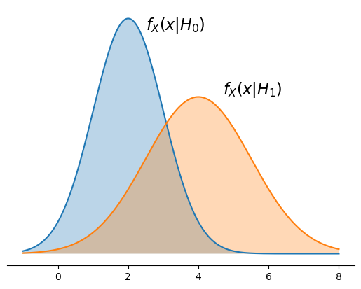
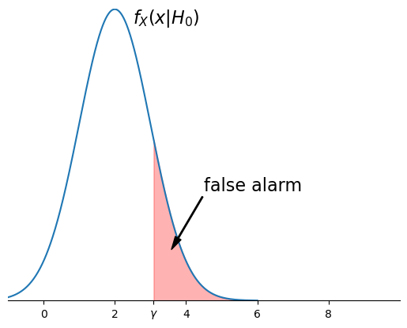
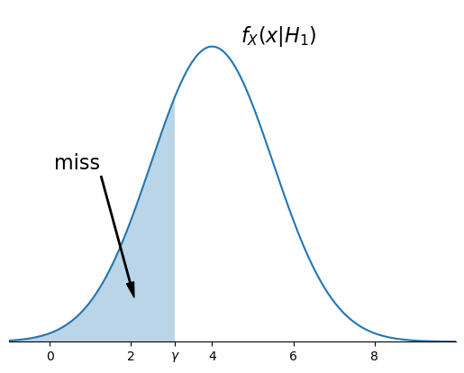
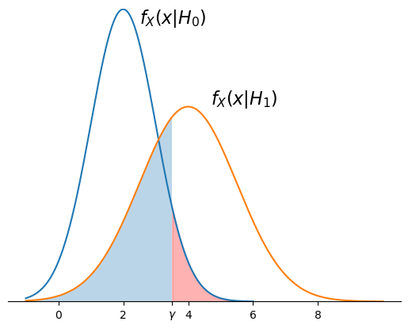
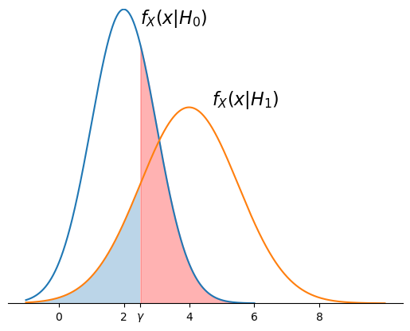
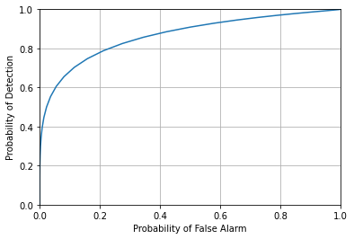
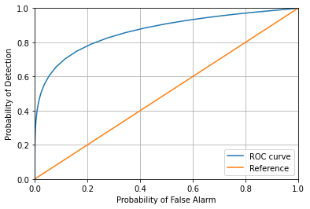

Binary Decisions from Continuous Data: Non-Bayesian Approaches
Contents
10.1. Binary Decisions from Continuous Data: Non-Bayesian Approaches#
In Optimal Decisions for Discrete Stochastic Systems, we considered optimal decision making in a discrete stochastic system (with discrete inputs and outputs) using a Bayesian framework. However, in many applications, the output of the system is continuous even if the input is discrete. For example, for a binary communication system, the input is bits, but the received noisy waveform is converted inside the receiver into a continuous random variable. Similarly, many medical tests for disease are based on chemical tests whose outputs are continuous random variables.
In this section, we consider scenarios in which the system input or hidden state is binary and the output is a continuous random variable. More specifically, we assume the data comes from one of two continuous densities, \(f_0(x|H_0)\) or \(f_1(x|H_1)\), and we wish to make a decision between \(H_0\) and \(H_1\) based on an observed value \(x\). Any decision rule can then be written as follows. Let \(\{R_0, R_1 \}\) be a partition of the real line. Then the decision rule is:
If \(x \in R_0\), decide \(H_0\).
If \(x \in R_1\), decide \(H_1\).
The regions \(R_0\) and \(R_1\) can be chosen to optimize some criteria that measures costs or rewards for making correct or erroneous decisions. Although \(R_0\) and \(R_1\) can generally be any Borel set, in practice they are often intervals that are determined by single threshold \(\gamma\), like \(R_0 = \{x|x < \gamma\}\) and \(R_1 = \{x|x > \gamma\}\).
Consider a scenario where the a priori probabilities \(P(H_0)\) and \(P(H_1)\) are not known, and thus we cannot apply a Bayesian test. Then we might instead focus on determining \(R_0\) and \(R_1\) based on performance criteria that do not depend on these a prioris. In particular, we will use:
the probability of false alarm, which we denote by \(\alpha\), and
the probability of miss, which we denote by \(\beta\).
Let’s introduce a concrete example to start to motivate our work:
Example
The PSA (Prostate-Specific Antigen) values for men in their 60s without cancer are approximately Gaussian(2,\(\sigma=1\)). The PSA values for men in their 60s with cancer are approximately Gaussian(4,\(\sigma=1.5\)).
Let \(X\) denote the PSA value. Then the conditional densities for \(X\) given \(H_0\) and given \(H_1\) are shown below:
import scipy.stats as stats
import numpy as np
import matplotlib.pyplot as plt
G0 = stats.norm(loc = 2, scale = 1)
G1 = stats.norm(loc = 4, scale = 1.5)
x=np.linspace(-1,8,1001)
plt.plot(x,G0.pdf(x))
plt.plot(x,G1.pdf(x))
# Fill under the regions found above
plt.fill_between(x,G0.pdf(x),alpha=0.3)
plt.fill_between(x,G1.pdf(x),alpha=0.3)
ax=plt.gca()
ax.spines['top'].set_visible(False)
ax.spines['right'].set_visible(False)
ax.spines['left'].set_visible(False)
ax.get_yaxis().set_ticks([]);
plt.annotate('$f_X(x|H_0)$', (2.5,0.38), fontsize=16)
plt.annotate('$f_X(x|H_1)$', (4.7,0.27), fontsize=16);

10.1.1. Maximum Likelihood Decision Rule#
Let’s start by considering the maximum likelihood (ML) rule:
If \(f_X(x|H_0) > f_X(x|H_1)\), decide \(H_0\).
If \(f_X(x|H_0) \le f_X(x|H_1)\), decide \(H_1\).
(Note that the deciding \(H_1\) when \(f_X(x|H_0) = f_X(x|H_1)\) is arbitrary and basically meaningless – the probability of getting that exact value of \(X\) is zero, because \(X\) is a continuous random variable.)
We can determine the ML decision region corresponding to \(H_0\) by finding the values of \(x\) where \(f_X(x|H_0) > f_X(x|H_1)\):
x=np.linspace(-10,10, 1001)
x[np.where(G0.pdf(x) > G1.pdf(x))]
array([-2.28, -2.26, -2.24, -2.22, -2.2 , -2.18, -2.16, -2.14, -2.12,
-2.1 , -2.08, -2.06, -2.04, -2.02, -2. , -1.98, -1.96, -1.94,
-1.92, -1.9 , -1.88, -1.86, -1.84, -1.82, -1.8 , -1.78, -1.76,
-1.74, -1.72, -1.7 , -1.68, -1.66, -1.64, -1.62, -1.6 , -1.58,
-1.56, -1.54, -1.52, -1.5 , -1.48, -1.46, -1.44, -1.42, -1.4 ,
-1.38, -1.36, -1.34, -1.32, -1.3 , -1.28, -1.26, -1.24, -1.22,
-1.2 , -1.18, -1.16, -1.14, -1.12, -1.1 , -1.08, -1.06, -1.04,
-1.02, -1. , -0.98, -0.96, -0.94, -0.92, -0.9 , -0.88, -0.86,
-0.84, -0.82, -0.8 , -0.78, -0.76, -0.74, -0.72, -0.7 , -0.68,
-0.66, -0.64, -0.62, -0.6 , -0.58, -0.56, -0.54, -0.52, -0.5 ,
-0.48, -0.46, -0.44, -0.42, -0.4 , -0.38, -0.36, -0.34, -0.32,
-0.3 , -0.28, -0.26, -0.24, -0.22, -0.2 , -0.18, -0.16, -0.14,
-0.12, -0.1 , -0.08, -0.06, -0.04, -0.02, 0. , 0.02, 0.04,
0.06, 0.08, 0.1 , 0.12, 0.14, 0.16, 0.18, 0.2 , 0.22,
0.24, 0.26, 0.28, 0.3 , 0.32, 0.34, 0.36, 0.38, 0.4 ,
0.42, 0.44, 0.46, 0.48, 0.5 , 0.52, 0.54, 0.56, 0.58,
0.6 , 0.62, 0.64, 0.66, 0.68, 0.7 , 0.72, 0.74, 0.76,
0.78, 0.8 , 0.82, 0.84, 0.86, 0.88, 0.9 , 0.92, 0.94,
0.96, 0.98, 1. , 1.02, 1.04, 1.06, 1.08, 1.1 , 1.12,
1.14, 1.16, 1.18, 1.2 , 1.22, 1.24, 1.26, 1.28, 1.3 ,
1.32, 1.34, 1.36, 1.38, 1.4 , 1.42, 1.44, 1.46, 1.48,
1.5 , 1.52, 1.54, 1.56, 1.58, 1.6 , 1.62, 1.64, 1.66,
1.68, 1.7 , 1.72, 1.74, 1.76, 1.78, 1.8 , 1.82, 1.84,
1.86, 1.88, 1.9 , 1.92, 1.94, 1.96, 1.98, 2. , 2.02,
2.04, 2.06, 2.08, 2.1 , 2.12, 2.14, 2.16, 2.18, 2.2 ,
2.22, 2.24, 2.26, 2.28, 2.3 , 2.32, 2.34, 2.36, 2.38,
2.4 , 2.42, 2.44, 2.46, 2.48, 2.5 , 2.52, 2.54, 2.56,
2.58, 2.6 , 2.62, 2.64, 2.66, 2.68, 2.7 , 2.72, 2.74,
2.76, 2.78, 2.8 , 2.82, 2.84, 2.86, 2.88, 2.9 , 2.92,
2.94, 2.96, 2.98, 3. , 3.02, 3.04, 3.06, 3.08])
So we will decide \(H_0\) if \(-2.28 \le X \le 3.08\) and decide \(H_1\) otherwise. Note, however, that \(P(X<-2.28|H_i)\) is very small for both \(H_0\) and \(H_1\):
G0.pdf(-2.28), G1.pdf(-2.28)
(4.198750293161747e-05, 4.1555007345160996e-05)
Thus, a simpler decision region with similar performance is:
Decide \(H_0\) if \(X \le 3.08\).
Decide \(H_1\) if \(X > 3.08\).
Recall that a false alarm is when \(H_0\) is true but the decision is \(H_1\). Since \(H_0\) is true, the probability a false alarm corresponds to some region under the curve \(f_X(x|H_0)\). For the ML detection rule, that region is \(\{x|x > 3.08\}\), and the false alarm probability is shown below:
G0 = stats.norm(loc = 2, scale = 1)
x = np.linspace(-1,6,100*7+1)
fa_region = x[np.where(G1.pdf(x) >= G0.pdf(x))]
gamma = min(fa_region)
plt.plot(x,G0.pdf(x))
# Fill under the regions found above
plt.fill_between(fa_region, G0.pdf(fa_region), alpha=0.3, color='red')
ax=plt.gca()
ax.spines['top'].set_visible(False)
ax.spines['right'].set_visible(False)
ax.spines['left'].set_visible(False)
ax.get_yaxis().set_ticks([]);
ax.set_xticks([0,2,4,gamma,6,8])
ax.set_xticklabels([0,2,4,'$\gamma$',6,8])
ax.annotate('false alarm', xy=(gamma+0.5, 0.07), xycoords='data',
xytext=(7.25, 0.17), textcoords='data', fontsize=16,
arrowprops=dict(facecolor='black', headwidth=6, width=1),
horizontalalignment='right', verticalalignment='top',
)
plt.annotate('$f_X(x|H_0)$', (2.5,0.38), fontsize=16)
plt.ylim(0, 0.4);
plt.xlim(-1,10);

Similarly, a miss is when \(H_1\) is true, but the decision is \(H_0\). The figure below illustrates the region under the conditional density \(f_X(x|H_1)\) that corresponds to the probability of miss:
G1 = stats.norm(loc = 4, scale = 1.5)
x=np.linspace(-1,10,11*100+1)
miss_region = x[np.where(G1.pdf(x) < G0.pdf(x))]
gamma = max(miss_region)
plt.plot(x,G1.pdf(x))
# Fill under the regions found above
plt.fill_between(miss_region, G1.pdf(miss_region),alpha=0.3)
ax=plt.gca()
ax.spines['top'].set_visible(False)
ax.spines['right'].set_visible(False)
ax.spines['left'].set_visible(False)
ax.get_yaxis().set_ticks([]);
ax.set_xticks([0,2,4,gamma,6, 8])
ax.set_xticklabels([0,2,4,'$\gamma$',6, 8])
ax.annotate('miss', xy=(gamma-1, 0.04), xycoords='data',
xytext=(1.25, 0.17), textcoords='data', fontsize=16,
arrowprops=dict(facecolor='black', headwidth=6, width=1),
horizontalalignment='right', verticalalignment='top',
)
plt.annotate('$f_X(x|H_1)$', (4.7,0.27), fontsize=16);
plt.ylim(0, 0.3);
plt.xlim(-1,10);

Note that both the probability of false alarm (\(\alpha\)) and the probability of miss (\(\beta\)) are tail probabilities of a Normal distribution. Thus, we can easily calculate their values using the \(Q\) function:
def q(x):
return stats.norm.sf(x)
# False alarm: Given H0, mu = 2 and sigma = 1
mu0 = 2
sigma0 =1
gamma = 3.08
alpha = q( (gamma - mu0) / sigma0)
print(f'The probability of false alarm is {alpha:.2g}')
The probability of false alarm is 0.14
# Miss: Given H1, mu = 4 and sigma = 1.5
mu1 = 4
sigma1 = 1.5
gamma = 3.08
beta = q( (mu1 - gamma) / sigma1)
print(f'The probability of miss is {beta:.2g}')
The probability of miss is 0.27
10.1.2. Optimizing Decision Regions Based on Performance Tradeoffs#
The ML rule gives us one pair of values for \(\alpha\) and \(\beta\). However, we can generate different pairs of \(\alpha, \beta\) by using the same rule but varying the decision threshold, \(\gamma\). For example, the figure below shows the false alarm and miss probability regions for \(\gamma=3.5\):

By using a larger value of \(\gamma\) than for the (approximate) ML decision, the probability of false alarm is reduced, while the probability of miss is increased:
gamma = 3.5
# False alarm: Given H0, mu = 2 and sigma = 1
mu0 = 2
sigma0 =1
alpha = q( (gamma - mu0) / sigma0)
# Miss: Given H1, mu = 4 and sigma = 1.5
mu1 = 4
sigma1 = 1.5
beta = q( (mu1 - gamma) / sigma1)
#alpha, beta
print(f'The probability of false alarm is {alpha:.2g}')
print(f'The probability of miss is {beta:.2g}')
The probability of false alarm is 0.067
The probability of miss is 0.37
If a lower probability of miss is desired, the decision threshold can be decreased. the figure below shows the false alarm and miss probability regions for \(\gamma=2.5\):

The probability of false alarm and miss for \(\gamma=2.5\) are
gamma = 2.5
# False alarm: Given H0, mu = 2 and sigma = 1
mu0 = 2
sigma0 =1
alpha = q( (gamma - mu0) / sigma0)
# Miss: Given H1, mu = 4 and sigma = 1.5
mu1 = 4
sigma1 = 1.5
beta = q( (mu1 - gamma) / sigma1)
#alpha, beta
print(f'The probability of false alarm is {alpha:.2g}')
print(f'The probability of miss is {beta:.2g}')
The probability of false alarm is 0.31
The probability of miss is 0.16
10.1.2.1. Illustrating Performance Tradeoffs: ROC Curves#
A common way to illustrated the tradeoff between probability of false alarm and probability of miss is through a ROC curve. ROC stands for Receiver Operating Characteristic, ROC curves and were originally developed for detecting objects in RADAR signals. A ROC curve plots the probability of false alarm (sometimes called the False Positive Rate, or FPR) versus the probability of detection (sometimes called the True Positive Rate, or TPR). Here, the probability of detection is \(1-\beta\). A ROC curve is usually generated by sweeping the threshold, \(\gamma\), over a region that essentially covers \(0 \le \alpha \le 1\) and \(0\le \beta \le 1\), recording the pairs \(\alpha, 1-\beta\), and then generating a line plot of the probability of detection as a function of the probability of false alarm.
The code below generates a ROC curve for this example
num_gammas = 101
gammas = np.linspace(-10, 10, num_gammas)
# False alarm: Given H0, mu = 2 and sigma = 1
mu0 = 2
sigma0 =1
# Miss: Given H1, mu = 4 and sigma = 1.5
mu1 = 4
sigma1 = 1.5
alphas = np.zeros(num_gammas)
betas = np.zeros(num_gammas)
for i, gamma in enumerate(gammas):
alphas[i] = q( (gamma - mu0) / sigma0)
betas[i] = q( (mu1 - gamma) / sigma1)
plt.plot(alphas, 1-betas)
plt.xlim(0, 1)
plt.ylim(0, 1)
plt.xlabel('Probability of False Alarm');
plt.ylabel('Probability of Detection');
plt.grid();

If we don’t use the observed value of \(X\) at all, then if we guess \(H_1\) with probability \(p\), then the probability of false alarm will be \(p\) (since when \(H_0\) is true, we will still choose \(H_1\) probability \(p\)), and the probability of detection will also be \(p\) (since, when \(H_1\) is true, we also decide \(H_1\) with probability \(p\)). Thus, without using the observed value, we get a linear relation between \(\alpha\) and \(1-\beta\). Sometimes this is shown as a reference on the ROC curve:
num_gammas = 101
gammas = np.linspace(-10, 10, num_gammas)
# False alarm: Given H0, mu = 2 and sigma = 1
mu0 = 2
sigma0 =1
# Miss: Given H1, mu = 4 and sigma = 1.5
mu1 = 4
sigma1 = 1.5
alphas = np.zeros(num_gammas)
betas = np.zeros(num_gammas)
for i, gamma in enumerate(gammas):
alphas[i] = q( (gamma - mu0) / sigma0)
betas[i] = q( (mu1 - gamma) / sigma1)
plt.plot(alphas, 1-betas, label='ROC curve')
plt.xlim(0, 1)
plt.ylim(0, 1)
plt.xlabel('Probability of False Alarm');
plt.ylabel('Probability of Detection');
p=np.linspace(0, 1, num_gammas)
plt.plot(p, p, label='Reference');
plt.legend();
plt.grid();

The further the ROC curve is from the reference (in terms of being more toward the upper left-hand corner), the better performance of the detector. I.e., it is able to achieve a higher \(1-\beta\) for a given \(\alpha\), or vice versa.
10.1.2.2. Quantifying Overall Detector Performance: Area Under the Curve (AUC)#
The individual points on the ROC curve tell the performance of a given detector for a specific detection threshold. However, we can also quantify the overall performance of a detector by providing a measure of how close the ROC curve is to the upper left-hand corner of the graph. Such a measure should depend on the entire ROC curve. We typically quantify this by by integrating the area under the ROC curve. This is called the Area Under Curve (AUC). We have seen that random guessing yields the diagonal reference line, and the area under the reference line is 1/2. If a detector makes perfect decisions, then it can achieve a probability of detection of \(1-\beta = 1\) with probability of false alarm \(\alpha=0\), so the ideal ROC curve rises instantly from 0 to 1 and then remains at 1. The area under the ideal ROC curve is thus 1. We can compute the area under the ROC for our example by using NumPy’s np.trapz() numerical integration routine. It is important to note that depending on the form of the detector, the \(\alpha\) values may come out in reverse numerical order:
alphas
array([1.00000000e+00, 1.00000000e+00, 1.00000000e+00, 1.00000000e+00,
1.00000000e+00, 1.00000000e+00, 1.00000000e+00, 1.00000000e+00,
1.00000000e+00, 1.00000000e+00, 1.00000000e+00, 1.00000000e+00,
1.00000000e+00, 1.00000000e+00, 1.00000000e+00, 1.00000000e+00,
1.00000000e+00, 1.00000000e+00, 1.00000000e+00, 1.00000000e+00,
1.00000000e+00, 1.00000000e+00, 1.00000000e+00, 1.00000000e+00,
1.00000000e+00, 1.00000000e+00, 1.00000000e+00, 1.00000000e+00,
1.00000000e+00, 1.00000000e+00, 9.99999999e-01, 9.99999997e-01,
9.99999989e-01, 9.99999967e-01, 9.99999900e-01, 9.99999713e-01,
9.99999207e-01, 9.99997888e-01, 9.99994587e-01, 9.99986654e-01,
9.99968329e-01, 9.99927652e-01, 9.99840891e-01, 9.99663071e-01,
9.99312862e-01, 9.98650102e-01, 9.97444870e-01, 9.95338812e-01,
9.91802464e-01, 9.86096552e-01, 9.77249868e-01, 9.64069681e-01,
9.45200708e-01, 9.19243341e-01, 8.84930330e-01, 8.41344746e-01,
7.88144601e-01, 7.25746882e-01, 6.55421742e-01, 5.79259709e-01,
5.00000000e-01, 4.20740291e-01, 3.44578258e-01, 2.74253118e-01,
2.11855399e-01, 1.58655254e-01, 1.15069670e-01, 8.07566592e-02,
5.47992917e-02, 3.59303191e-02, 2.27501319e-02, 1.39034475e-02,
8.19753592e-03, 4.66118802e-03, 2.55513033e-03, 1.34989803e-03,
6.87137938e-04, 3.36929266e-04, 1.59108590e-04, 7.23480439e-05,
3.16712418e-05, 1.33457490e-05, 5.41254391e-06, 2.11245470e-06,
7.93328152e-07, 2.86651572e-07, 9.96442632e-08, 3.33204485e-08,
1.07175903e-08, 3.31574598e-09, 9.86587645e-10, 2.82315804e-10,
7.76884758e-11, 2.05578891e-11, 5.23095754e-12, 1.27981254e-12,
3.01062798e-13, 6.80922489e-14, 1.48065375e-14, 3.09535877e-15,
6.22096057e-16])
Whenever that is the case, we need to use np.flip() on both vectors to put them in the correct order. We pass the flipped alphas vector as the x keyword parameter and the flipped 1-betas vector as the y keyword parameter of np.trapz(). (Do NOT omit the keyword names because the default order is y, x, which will be confusing to most people.) The final command is shown at the end of the code block below:
num_gammas = 101
gammas = np.linspace(-10, 10, num_gammas)
# False alarm: Given H0, mu = 2 and sigma = 1
mu0 = 2
sigma0 =1
# Miss: Given H1, mu = 4 and sigma = 1.5
mu1 = 4
sigma1 = 1.5
alphas = np.zeros(num_gammas)
betas = np.zeros(num_gammas)
for i, gamma in enumerate(gammas):
alphas[i] = q( (gamma - mu0) / sigma0)
betas[i] = q( (mu1 - gamma) / sigma1)
auc = np.trapz(x = np.flip(alphas), y = np.flip(1-betas) )
print(f'The area under curve (AUC) for this experiment is {auc : .2g}')
The area under curve (AUC) for this experiment is 0.87
10.1.2.3. Neyman-Pearson Detection#
Neyman-Pearson detection formalizes making the trade-off between \(\alpha\) and \(\beta\) in the following way: Given a required value of \(\alpha\), Neyman-Pearson detection chooses the decision regions \(R_0, R_1\) to minimize the probability of miss. Let’s find the Neyman-Pearson decision rule for \(\alpha=0.1\) when the decision regions are constrained to be of the form \(R_0: \{x| x < \gamma \}\) and \(R_1: \{x| x \ge \gamma\}\). We can use the ROC curve to get the approximate value of \(1- \beta \approx 0.7\), or \(\beta =0.3\). Let’s see how we can get the same result analytically.
For \(\alpha < 0.5\), the probability of false alarm will be the probability of an upper tail of the form \(P(X>\gamma|H_0)\), which is
We can solve for \(\gamma\) by taking \(Q^{-1}\) of both sides:
Let’s create a qinv() function as an alias for stats.norm.isf():
def qinv(p):
return stats.norm.isf(p)
gamma_np =2+qinv(0.1)
print('The Neyman-Pearson detection threshold for a false alarm probability')
print(f'of 0.1 is {gamma_np : 0.3g}')
The Neyman-Pearson detection threshold for a false alarm probability
of 0.1 is 3.28
Then the probability of false alarm is \(P(X< \gamma|H_1)\), which is
The result is computed below:
beta_np = q((4-gamma_np)/1.5)
print('The probability of miss for the Neyman-Pearson detector')
print(f'with alpha=0.1 is {beta_np : 0.2g}')
The probability of miss for the Neyman-Pearson detector
with alpha=0.1 is 0.32
The analytical result is very close to our estimate from the ROC curve.
10.1.3. Exercises#
1. Plot the performance if the variance of each PSA test is reduced by a factor of 4. What is the AUC?
2. If the variance of each PSA test is reduced by a factor of 2 (from the original values), what is the decision threshold for \(\alpha=0.1\)? What value of \(\beta\) is achieved?